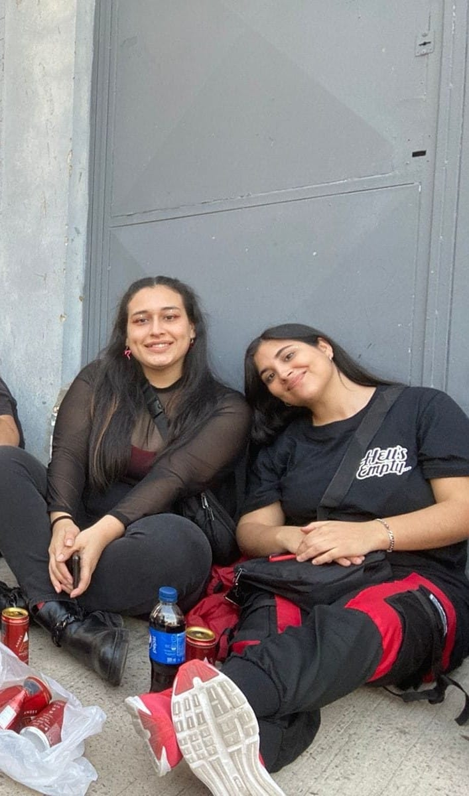

26-08-2022 (Show de la Rosi)
La primera vez que nos vimos, quien iba a saber todo lo que nos esperaba jiji, que facherita estabas 😻 (yo parecía un power ranger)

Respondé estas preguntas
Feliz cumple mi amor, espero que seas muy feliz siempre, gracias por dejarme ser parte de tu vida, quería recordar algunos momentos lindos que pasamos juntitas, ojalá la vida nos regale muchos más porque con vos al lado todo es más lindo 👩❤️👩
La primera vez que nos vimos, quien iba a saber todo lo que nos esperaba jiji, que facherita estabas 😻 (yo parecía un power ranger)
Re confianzuda me volví a los días a molestarte devuelta
Primera vez que viajé a Py y que salí sola de mi país (y casa aprox) para verte, antes que te vayas a Madrid 😢, la mejor decisión que tomé TE AMO fue un antes y un después
Volviste 🎉 Primera vez que fui en avión y me dio un su(suku) pero todo era felicidad igual porque estabas devuelta acá y por más miedos que hayan mi mayor certeza eras (y sos) vos. La pasamos increíble y cadá día te quería más. (Masiado estabas tierna con los patitos)
De cuando viniste a morir de frío en pleno junio, comimos mucho y te enojaste porque abrí la cerveza antes de entrar al cine 😊

Volviste para el casamiento de Flor, hermosísima como siempre y sentada en la mesa familiar asies 😎
Y lo pudimos hacer 💖
Nuestra primera vez en Río (ojalá muchas más) Fue increíble 🌈
Viajamos en tren a Mardel, comimos rico, conociste la costa atlántica (la prox. a las Tonis) 🌊
Por muchos más momentos juntitas, viajes, risas, abracitos, malos humores que se solucionen con comidita rica y besos jiji. Te amo para siempre.
Te dejo la playlist de algunas canciones que me hacen acordar a vos 💝
Desde la primera vez que nos vimos, cada día te quiero más (Gracias por aguantarme tanto tiempo).
Gracias por aguantarme todos los días, por llenarme de amor, de ganas de ser mejor en todos los sentidos, gracias por dejarme acompañarte también, me pone felíz ver como progresas día a día, te admiro, te amo muchísimo y espero que podamos vivir miles de momentos más 💘